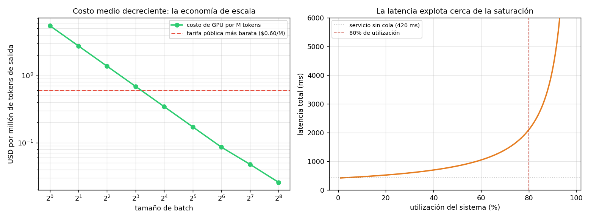

02 — Batching, throughput y la latencia que no controlás¶
El número que no cerraba¶
§1 dejó un resultado incómodo: un modelo de clase 8B en una H100 genera ~147 tokens por segundo. A $2.90 la hora de GPU, eso son $5.50 por millón de tokens de salida.
Pero la tarifa pública más barata de la tabla de prod_lib es de $0.60 por millón.
El proveedor cobra nueve veces menos de lo que —según §1— le cuesta producirlo.
O el modelo está mal, o falta algo.
Falta algo, y es lo que explica el negocio entero: el proveedor no sirve una secuencia a la vez.
La analogía: costos fijos y escala mínima eficiente¶
Los 16 GB de pesos que hay que mover desde memoria para generar un token son un costo fijo por paso de generación, no un costo por secuencia. Si en ese mismo paso hay 64 secuencias esperando su siguiente token, el movimiento de pesos sirve a las 64. El costo fijo se reparte.
Esto es, literalmente, una economía de escala: costo medio decreciente en el volumen, por indivisibilidad del insumo. Un economista reconoce la estructura de inmediato — es la misma razón por la que una imprenta necesita tirajes largos, o por la que un hospital rural tiene costo por paciente más alto que uno urbano. La tecnología impone una escala mínima eficiente, y por debajo de ella el negocio no cierra.
Corrida en code/02-batching.py; la aritmética en
econ_lib.py.
La curva: costo medio decreciente¶
batch | tok/s total | tok/s por seq | ms/token seq | $/M tokens
------------------------------------------------------------------------
1 | 147 | 147 | 6.8 | 5.496
2 | 293 | 147 | 6.8 | 2.748
4 | 586 | 147 | 6.8 | 1.374
8 | 1,172 | 147 | 6.8 | 0.687
16 | 2,345 | 147 | 6.8 | 0.344
32 | 4,690 | 147 | 6.8 | 0.172
64 | 9,380 | 147 | 6.8 | 0.086
128 | 16,884 | 132 | 7.6 | 0.048
256 | 31,267 | 122 | 8.2 | 0.026
Leé la columna del medio antes que ninguna: la latencia por secuencia no cambia entre batch 1 y batch 64. Cada usuario recibe sus tokens a la misma velocidad, mientras el throughput agregado se multiplica por 64 y el costo por millón de tokens se divide por 64.
Es un almuerzo gratis, y es raro que exista uno. Existe porque el sistema estaba limitado por ancho de banda, no por cómputo (§1): las unidades de cálculo estaban ociosas esperando que llegaran los pesos. Meter más secuencias en el batch usa capacidad que ya estabas pagando y no usabas.
A partir de batch ~128 empiezan los rendimientos decrecientes: la atención sobre el KV cache no se comparte entre secuencias —cada una tiene el suyo— y ese trabajo sí crece con el batch. La latencia por secuencia empieza a subir (6.8 → 8.2 ms/token) y el costo baja menos que proporcionalmente.

Límite del modelo: la linealidad perfecta hasta batch 64 es una simplificación. En un servidor real la degradación empieza antes y es más suave, porque el batch nunca está perfectamente lleno ni perfectamente sincronizado. La forma de la curva —costo medio decreciente con rendimientos decrecientes— es robusta; los puntos exactos de quiebre no lo son.
Por qué el número ahora sí cierra¶
Costo de GPU modelado (clase 8B, H100 a $2.9/h):
batch 1: $ 5.496 / M tokens de salida
batch 32: $ 0.172 / M tokens de salida
batch 256: $ 0.026 / M tokens de salida
Tarifa pública más barata de prod_lib: gpt-4o-mini a $0.600 / M out
A batch 1, el costo de producción es 9× la tarifa: servir de a una secuencia es ruinoso. A batch 32, el costo cae a menos de un tercio de la tarifa, y ahí aparece el margen del proveedor.
De acá sale la frase que conviene tener presente al negociar cualquier cosa con un proveedor de inferencia:
No te vende una GPU. Te vende una fracción de una GPU muy ocupada — y su negocio depende de mantenerla ocupada.
Eso explica varias cosas que de otro modo parecen arbitrarias: por qué hay descuentos grandes por procesamiento en lote asíncrono (batch API), por qué los límites de rate existen incluso cuando pagás bien, y por qué el precio por token cae tanto más rápido que el costo del hardware (§5).
Continuous batching: por qué esto funciona en la práctica¶
El batching clásico —juntar N requests, procesarlos, devolver N respuestas— no sirve para LLMs: las secuencias terminan en momentos distintos (una respuesta de 20 tokens y otra de 500), y esperar a la más larga desperdicia la GPU.
El continuous batching (o in-flight batching) resuelve eso: el servidor mantiene un batch en vuelo y, apenas una secuencia termina, mete otra en su lugar sin esperar al resto.
graph LR
subgraph CL["Batching clásico: la GPU espera a la más lenta"]
direction TB
L1["A termina<br/>(20 tok)"] --> LW["GPU ociosa<br/>en el slot de A"]
L2["B sigue<br/>(500 tok)"] --> LW
LW --> LR2["recién ahora<br/>entra C"]
end
subgraph CB["Continuous batching: el slot se rellena en vuelo"]
direction TB
C1["A termina<br/>(20 tok)"] --> CE["C entra al slot<br/>en el paso siguiente"]
C2["B sigue<br/>(500 tok)"] --> CE
CE --> CR["batch siempre lleno"]
end
style LW fill:#e74c3c,stroke:#333,color:#fff
style CE fill:#2ecc71,stroke:#333,color:#1a1a1a
style CR fill:#bdf,stroke:#333,color:#1a1a1aLa consecuencia para vos: el sistema opera cerca de su batch objetivo casi todo el tiempo, lo que hace que la relación entre carga y latencia se parezca mucho más a una cola que a una función escalonada. Que es exactamente lo que viene ahora.
La latencia que no controlás¶
Con el tiempo de servicio de §1 (420 ms para la carga del RAG chileno), y tratando el sistema como una cola M/M/1:
utilización | espera en cola | latencia total | vs vacío
------------------------------------------------------------
10% | 47 ms | 467 ms | 1.1×
30% | 180 ms | 600 ms | 1.4×
50% | 420 ms | 840 ms | 2.0×
70% | 980 ms | 1400 ms | 3.3×
80% | 1680 ms | 2100 ms | 5.0×
90% | 3780 ms | 4200 ms | 10.0×
95% | 7980 ms | 8400 ms | 20.0×
99% | 41580 ms | 42000 ms | 100.0×
La espera en cola es servicio · ρ/(1−ρ). No es un resultado sobre LLMs: es
teoría de colas de manual, y por eso mismo es confiable. Lo que aporta acá es que
explica un fenómeno que todo operador observa y pocos anticipan: la latencia no
se degrada linealmente con la carga, explota cerca de la saturación.
Al 50% de utilización esperás lo mismo que tardás en ser atendido. Al 95%, diecinueve veces más. Entre 80% y 95% de utilización —una diferencia que en un dashboard parece menor— la latencia se cuadruplica.
Dos consecuencias prácticas, una para cada lado de la API:
- Como cliente: tu p95 empeora cuando al proveedor le va bien. No es un bug ni mala fe; es el equilibrio del sistema. Un proveedor que mantuviera utilización del 30% para darte latencia estable tendría que cobrarte el triple. La latencia estable y el precio bajo son sustitutos, y el proveedor eligió por vos.
- Si alguna vez servís vos (§4): planificar capacidad al 90% de utilización es planificar un incidente. El punto de operación razonable está por debajo del 80%, y esa GPU parcialmente ociosa es parte del costo del servicio, no un desperdicio a eliminar.
Qué controlás y qué no¶
palanca | control | efecto
--------------------------------------------------------------------------------
max_tokens (§1: el output es la fase cara) | alto | directo y grande
Streaming (time-to-first-token vs total) | alto | percepción, no costo
Concurrencia propia / rate limit (03 §6) | medio | evita tu propia cola
Tamaño del prompt | medio | barato en tiempo, lineal en $
Utilización del proveedor | NINGUNO | la fija el tráfico de otros
Tamaño del batch del proveedor | NINGUNO | decisión de infraestructura ajena
Dos observaciones sobre esta tabla.
El streaming no ahorra nada, y conviene tenerlo claro: mueve el time-to-first-token hacia adelante y mejora mucho la percepción, pero el tiempo total y el costo son idénticos. Es una decisión de experiencia de usuario que a veces se argumenta como si fuera de performance.
El rate limit propio de 03 §6 es la palanca subestimada. Ahí se justificó
como cortesía con el proveedor y protección contra 429. Con la curva de colas a la
vista aparece el argumento egoísta y más fuerte: si mandás más requests
concurrentes de los que el proveedor te atiende en paralelo, el exceso hace cola
—y esa cola es tuya, y la pagás en tu p95. Autolimitarse es la diferencia entre un
p95 estable y uno que explota.
Estado del arte (2026)¶
| Aspecto | Estado | Detalle |
|---|---|---|
| Continuous / in-flight batching | ✅ Estándar | vLLM, TensorRT-LLM, TGI; nadie sirve sin esto |
| PagedAttention | ✅ Estándar | Gestiona el KV cache en bloques; sube el batch efectivo |
| Batch APIs con descuento (~50%) | 🟢 Generalizado | El proveedor te paga por dejarlo llenar el batch a su ritmo |
| Chunked prefill | 🟢 En adopción | Intercala prefill y decode para que un prompt largo no frene el batch |
| Disaggregated serving (prefill ≠ decode) | 🟡 Emergente | Separar las dos fases en hardware distinto; cada una tiene su cuello |
| SLOs de latencia por tier de precio | 🟡 Incipiente | Pocos proveedores comprometen p95 contractual |
| Predecir tu latencia desde afuera | 🔴 Imposible | Depende de la utilización del proveedor, que no se publica |
El disaggregated serving es el que vale seguir: si prefill y decode tienen cuellos distintos (cómputo vs. ancho de banda, §1), servirlos en el mismo hardware es un compromiso. Separarlos permite dimensionar cada fase por su propia restricción, y probablemente mueva la estructura de precios input/output.
Lo que viene en la próxima sección¶
§1 y §2 explicaron la máquina y sus economías, tomando el modelo como dado. §3 levanta ese supuesto: cuantización y destilación cambian el modelo mismo. Ambas atacan directamente el número que gobierna todo —los bytes que hay que mover por token— y ambas vienen con una factura en calidad que hay que medir, no suponer.
Conexiones¶
- §1 (mecánica): el batching funciona porque el decode es memory-bound. Si el sistema estuviera limitado por cómputo, agrandar el batch no sería gratis.
03 §6(reliability): el rate limiting de cliente gana acá un argumento propio —proteger tu p95— además del de cortesía con el proveedor.03 §10(costo): los descuentos de batch API son esta economía de escala ofrecida como producto; entran directo al presupuesto por feature.01 §10(Pareto costo/latencia): la frontera de ahí supone latencia estable. Esta sección muestra que la latencia es función de la utilización del proveedor, o sea que la frontera se mueve durante el día.- §4 (self-hosting): acá está el argumento central de esa sección. Si tu tráfico no llena un batch, tu costo por token es el de la fila "batch 1" — ruinoso frente a la tarifa pública.